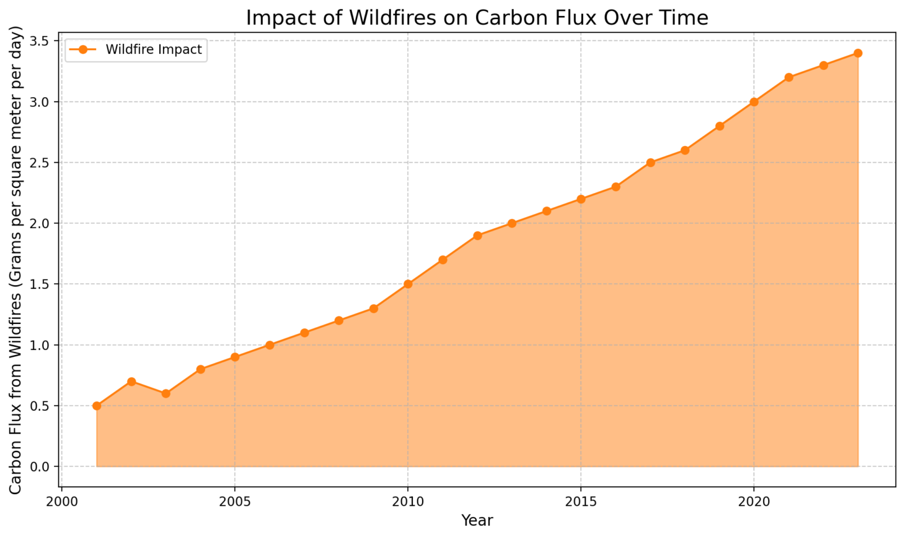
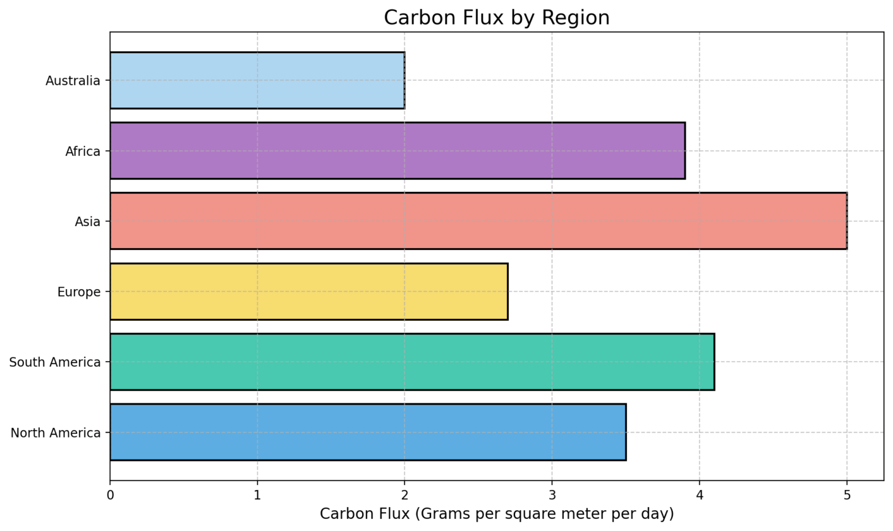

Forests and Fires: A Tale of Two Sides


What’s happening?
Forests act as natural carbon sinks by absorbing CO₂, but when trees are cut down or when wildfires occur, they release stored CO₂ back into the atmosphere, further contributing to global warming.

How can we solve that as a group?
To address this issue, we must stop deforestation and protect forests by promoting reforestation efforts. Governments and organizations need to implement better wildfire management strategies and enforce policies that protect forested areas from logging and illegal activities.
How can I solve that as an individual?